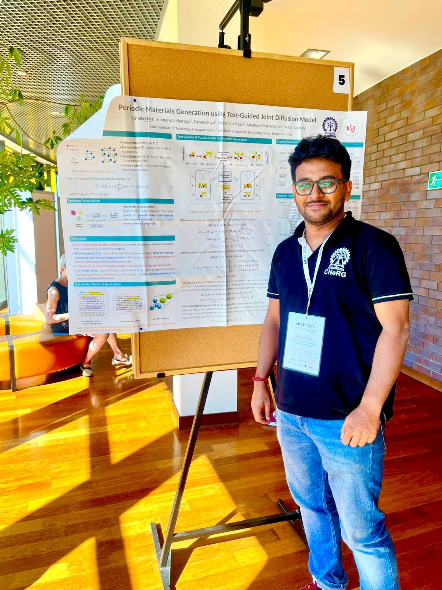

Kishalay Das
Hola! I'm a researcher working at the intersection of Graph Representation Learning, Geometric Deep Learning, and Generative Modeling, with a strong focus on AI for Science and AI for Medicine. If pronunciation feels tricky, call me KD.

About
I am currently a Postdoctoral Associate at Yale University, working under the supervision of Smita Krishnaswamy.
Prior to this, I was a Prime Minister's Research Fellow (PMRF) at the Indian Institute of Technology, Kharagpur (2020–2026), as part of the Complex Networks Research Group (CNeRG), advised by Prof. Niloy Ganguly and Prof. Pawan Goyal.
I completed my M.Tech (2020) from the Department of Computer Science and Automation, IISc Bangalore, working with Prof. M. N. Murty on representation learning for graphs and hypergraphs. My B.Tech (2012) is from Meghnad Saha Institute of Technology, Kolkata.
Before academia, I gained industry and research experience at ISRO, Tata Consultancy Services, and Accenture.
I also create educational content on YouTube.
Highlights
- May 2026 CrysPrompt accepted at UAI 2026 Paper
- Apr 2026 CrysLDNet accepted at ICML 2026 Paper
- Apr 2026 Joined Smita Krishnaswamy Lab at Yale University as Postdoctoral Associate
- Jan 2026 Defended Ph.D. thesis — officially Dr. Kishalay Das 🎉
- Sep 2025 CrysLLMGen accepted at NeurIPS 2025 Paper
- Apr 2025 Attended ICLR 2025 and presented TGDMat [Poster] [Vlog]
- Jan 2025 TGDMat accepted at ICLR 2025 Paper
Academic Service
Contact
Feel free to reach out — I'm always happy to chat about research, collaborations, or anything in between.